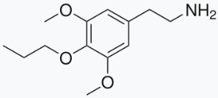
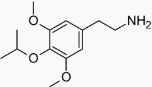

xx1012000456
@xx1012000456
@Benzyl_titanium 所谓的异构体指的是给出cas下可再次拆分的存在的旋光异构体。这补充基本上就扩展到盐，剩下的东西就是摆设


Benzyl titanium
@Benzyl_titanium
下面两种物质分别是丙基麦斯卡林（图1）和异丙基麦斯卡林（图2），前者在去年七月被列入非药用目录，后者则没有，不知道你有没有看过管制目录的这个规定，“注：上述品种包括其可能存在的异构体、酯及醚（除非另有规定）”，那么这两个化合物属于位置异构的话是不是也被管制了呢？ https://t.co/1DXpYcUXw0